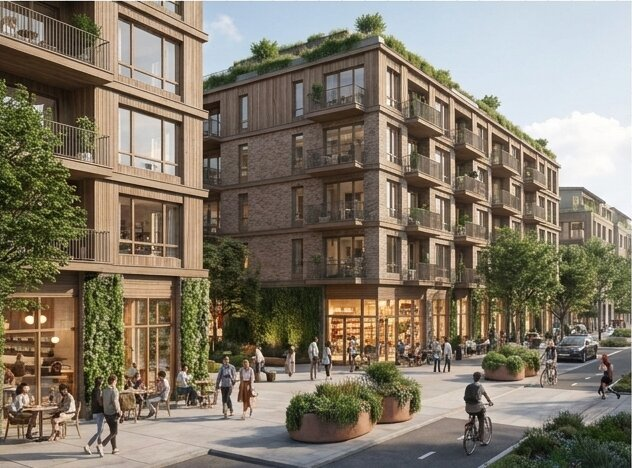

The technology to build great housing in factories already exists. What's been missing is an anchor buyer.
The U.S. has spent decades trying to fix the factory. The actual problem is demand certainty: factories cannot survive on project-by-project pipelines. Industrialized construction works when an anchor buyer provides volume certainty, and the evidence is consistent wherever it appears.
Units delivered from a standardized catalog: roughly 5 months faster and ~18% cheaper on contract. The anchor-buyer model, proven at national scale.
Annual construction budget now being pointed at a domestic factory supply chain: the emerging American anchor buyer, targeting ~30% schedule and ~20% cost gains.
Offsite construction share has stayed roughly flat for decades, and ~$4B of venture capital (Katerra) proved that capital alone cannot force a market. Demand certainty can.
One chassis, a full catalog of neighborhoods
The shell, core, structure, and factory tooling stay constant. Only the interior mix and the exterior expression change. A standardized core delivers the cost, schedule, and quality; the contextual skin means standardization never means sameness.

The Now City Block
A standardized single-stair mid-rise that flexes its interior mix, from compact homes for students and seniors to 3- and 4-bedroom family units, without changing the shell, core, or tooling. Stands alone or chains into a 4-to-6-story courtyard block.

Now City Row Houses
A door-on-the-street typology for the peri-urban edge, with an integrated ground-floor ADU and separate entrance for multigenerational living, supplemental income, or aging in place. The same envelope and delivery system, reformatted.

Contextual Urban Tower
Targeted height where a district needs it, sited to protect neighborhood light and views, never tower-next-to-tower. Shared social floors interweave the vertical stack so density scales without isolation.
The core unlock: the single-stair building
The Point Access Block is the fundamental building block of successful cities worldwide, and it is precisely what factories want to build: a standardized core, narrow repeatable modules, and minimal circulation. Within Now City Homes it is the hero chassis, one part of a larger system.
Double-loaded corridor
Point Access Block · the Now City chassis
The regulatory window is open now
The same standardized, code-tested building can be deployed across an expanding set of West Coast jurisdictions today. First movers capture the arbitrage.
Seattle
Six-story single-stair buildings permitted since 1977, with a safety record exceeding national averages.
Washington State
Single-stair legalized statewide (SB 5491, 2023), extended in 2026 with elevator and scissor-stair reform that further reduces core costs.
Oregon · the immediate play
Four-story single-stair permitted today as a clear and objective right, with the enhanced life-safety tier unlocking 5-6 stories and roughly 25% more density.
California · opening
Statewide single-stair reform in motion, with State Fire Marshal recommendations delivered to the legislature in 2026. The catalog is ready for the market's largest state.
Asset-light by design
We are not building a factory. We are orchestrating a partnership stack.
Delivery runs through an established industrialized construction partner in the Western U.S. with a patented building system, supported by a network of timber, logistics, and manufacturing relationships. Zero capital drain on proprietary factories, geographic flexibility to deploy the chassis where fundamentals are strongest, and a supply chain insulated from localized labor shortages.
Performance + intelligence
Engineer once. Replicate everywhere. Compound the learning.
Passive House-level envelopes, low embodied and operational carbon, and healthy cross-ventilated homes come by default, because performance is engineered into the chassis once. And because the product repeats, every deployment feeds the platform's AI-assisted optimization, from unit mix and daylighting to factory-load scheduling, with human review non-negotiable. The building system and the software system are the same flywheel.